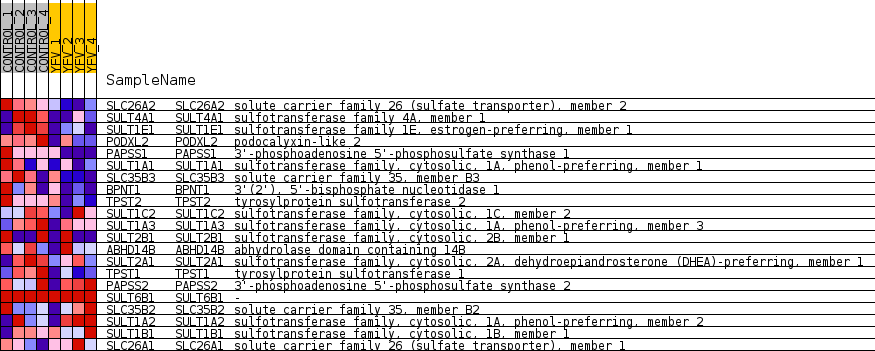
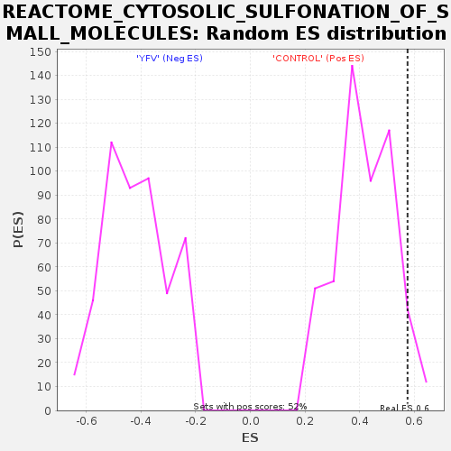

Profile of the Running ES Score & Positions of GeneSet Members on the Rank Ordered List
| Dataset | MATRIZ_GSE99081_collapsed_to_symbols.gsea_CLASE_99081.cls#CONTROL_versus_YFV |
| Phenotype | gsea_CLASE_99081.cls#CONTROL_versus_YFV |
| Upregulated in class | CONTROL |
| GeneSet | REACTOME_CYTOSOLIC_SULFONATION_OF_SMALL_MOLECULES |
| Enrichment Score (ES) | 0.5752049 |
| Normalized Enrichment Score (NES) | 1.346642 |
| Nominal p-value | 0.06007752 |
| FDR q-value | 1.0 |
| FWER p-Value | 1.0 |
| SYMBOL | TITLE | RANK IN GENE LIST | RANK METRIC SCORE | RUNNING ES | CORE ENRICHMENT | |
|---|---|---|---|---|---|---|
| 1 | SLC26A2 | solute carrier family 26 (sulfate transporter), member 2 | 288 | 0.960 | 0.0990 | Yes |
| 2 | SULT4A1 | sulfotransferase family 4A, member 1 | 571 | 0.794 | 0.1782 | Yes |
| 3 | SULT1E1 | sulfotransferase family 1E, estrogen-preferring, member 1 | 661 | 0.759 | 0.2650 | Yes |
| 4 | PODXL2 | podocalyxin-like 2 | 775 | 0.710 | 0.3445 | Yes |
| 5 | PAPSS1 | 3'-phosphoadenosine 5'-phosphosulfate synthase 1 | 1099 | 0.618 | 0.3998 | Yes |
| 6 | SULT1A1 | sulfotransferase family, cytosolic, 1A, phenol-preferring, member 1 | 1293 | 0.573 | 0.4576 | Yes |
| 7 | SLC35B3 | solute carrier family 35, member B3 | 2184 | 0.458 | 0.4584 | Yes |
| 8 | BPNT1 | 3'(2'), 5'-bisphosphate nucleotidase 1 | 2986 | 0.344 | 0.4510 | Yes |
| 9 | TPST2 | tyrosylprotein sulfotransferase 2 | 3132 | 0.328 | 0.4820 | Yes |
| 10 | SULT1C2 | sulfotransferase family, cytosolic, 1C, member 2 | 3275 | 0.313 | 0.5112 | Yes |
| 11 | SULT1A3 | sulfotransferase family, cytosolic, 1A, phenol-preferring, member 3 | 3498 | 0.289 | 0.5327 | Yes |
| 12 | SULT2B1 | sulfotransferase family, cytosolic, 2B, member 1 | 4029 | 0.241 | 0.5294 | Yes |
| 13 | ABHD14B | abhydrolase domain containing 14B | 4314 | 0.218 | 0.5384 | Yes |
| 14 | SULT2A1 | sulfotransferase family, cytosolic, 2A, dehydroepiandrosterone (DHEA)-preferring, member 1 | 4404 | 0.211 | 0.5586 | Yes |
| 15 | TPST1 | tyrosylprotein sulfotransferase 1 | 4530 | 0.200 | 0.5752 | Yes |
| 16 | PAPSS2 | 3'-phosphoadenosine 5'-phosphosulfate synthase 2 | 6143 | 0.065 | 0.4837 | No |
| 17 | SULT6B1 | - | 7888 | 0.000 | 0.3762 | No |
| 18 | SLC35B2 | solute carrier family 35, member B2 | 9632 | -0.009 | 0.2698 | No |
| 19 | SULT1A2 | sulfotransferase family, cytosolic, 1A, phenol-preferring, member 2 | 13170 | -0.324 | 0.0911 | No |
| 20 | SULT1B1 | sulfotransferase family, cytosolic, 1B, member 1 | 13293 | -0.338 | 0.1247 | No |
| 21 | SLC26A1 | solute carrier family 26 (sulfate transporter), member 1 | 14128 | -0.467 | 0.1302 | No |

